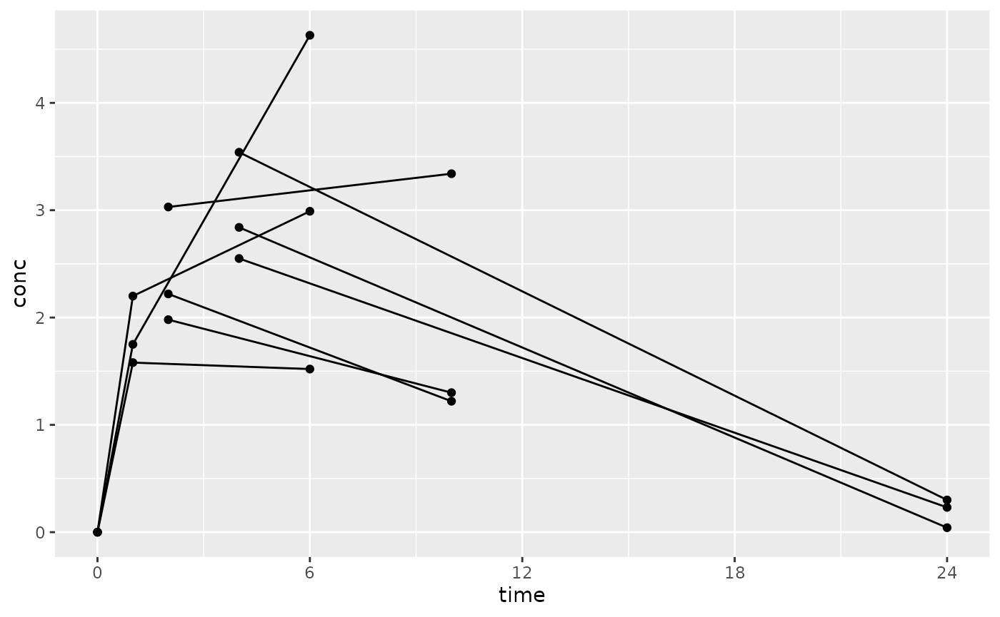

Sparse noncompartmental analysis (NCA) is performed when multiple individuals contribute to a single concentration-time profile due to the fact that there are only one or a subset of the full profile samples taken per animal. A typical example is when three mice have PK drawn per time point, but no animals have more than one sample drawn. Another typical example is when animals may have two or three samples during an interval, but no animal has the full profile.
Sparse NCA is setup similarly to how normal, dense PK sampling is setup with PKNCA. The only difference are that you give the sparse option to PKNCAconc(), and in your interval calculations, you will request the sparse variants of the parameters. As of the writing of this vignette, the only sparse parameter for calculation is sparse_auclast. Any of the non-sparse parameters will be calculated based on the mean profile of the animals in a group.
The example below uses data extracted from Holder D. J., Hsuan F., Dixit R. and Soper K. (1999). A method for estimating and testing area under the curve in serial sacrifice, batch, and complete data designs. Journal of Biopharmaceutical Statistics, 9(3):451-464.
# Setup the data
d_sparse <-
data.frame(
id = c(1L, 2L, 3L, 1L, 2L, 3L, 1L, 2L, 3L, 4L, 5L, 6L, 4L, 5L, 6L, 7L, 8L, 9L, 7L, 8L, 9L),
conc = c(0, 0, 0, 1.75, 2.2, 1.58, 4.63, 2.99, 1.52, 3.03, 1.98, 2.22, 3.34, 1.3, 1.22, 3.54, 2.84, 2.55, 0.3, 0.0421, 0.231),
time = c(0, 0, 0, 1, 1, 1, 6, 6, 6, 2, 2, 2, 10, 10, 10, 4, 4, 4, 24, 24, 24),
dose = c(100, 100, 100, 100, 100, 100, 100, 100, 100, 100, 100, 100, 100, 100, 100, 100, 100, 100, 100, 100, 100)
)Look at your data. (This is not technically a required step, but it’s good practice.)
library(ggplot2)
ggplot(d_sparse, aes(x=time, y=conc, group=id)) +
geom_point() +
geom_line() +
scale_x_continuous(breaks=seq(0, 24, by=6))
Sparse NCA requires that subject numbers (or animal numbers) are given, even if each subject only contributes a single sample. The reason for this requirement is that which subject contributes to which time point changes the standard error calculation. If all individuals contribute a single sample, a simple way to handle this is by setting a column with sequential numbers and giving that as the subject identifier:
d_sparse$id <- 1:nrow(d_sparse)Setup PKNCA for calculations and then calculate!
##
## Attaching package: 'PKNCA'## The following object is masked from 'package:stats':
##
## filter
o_conc_sparse <- PKNCAconc(d_sparse, conc~time|id, sparse=TRUE)
d_intervals <-
data.frame(
start=0,
end=24,
aucinf.obs=TRUE,
cmax=TRUE,
sparse_auclast=TRUE
)
o_data_sparse <- PKNCAdata(o_conc_sparse, intervals=d_intervals)
o_nca <- pk.nca(o_data_sparse)## No dose information provided, calculations requiring dose will return NA.## Warning: Too few points for half-life calculation (min.hl.points=3 with only 2
## points)## Warning: Cannot yet calculate sparse degrees of freedom for multiple samples per
## subjectAs with any other PKNCA result, the data are available through the summary() function:
summary(o_nca)## start end N cmax sparse_auclast aucinf.obs
## 0 24 1 3.05 [NC] 39.5 [NC] NC
##
## Caption: cmax, sparse_auclast, aucinf.obs: geometric mean and geometric coefficient of variationor individual results are available through the as.data.frame() function:
as.data.frame(o_nca)## # A tibble: 16 × 5
## start end PPTESTCD PPORRES exclude
## <dbl> <dbl> <chr> <dbl> <chr>
## 1 0 24 cmax 3.05 NA
## 2 0 24 tmax 6 NA
## 3 0 24 tlast 24 NA
## 4 0 24 clast.obs 0.191 NA
## 5 0 24 lambda.z NA Too few points for half-life calcula…
## 6 0 24 r.squared NA Too few points for half-life calcula…
## 7 0 24 adj.r.squared NA Too few points for half-life calcula…
## 8 0 24 lambda.z.time.first NA Too few points for half-life calcula…
## 9 0 24 lambda.z.n.points NA Too few points for half-life calcula…
## 10 0 24 clast.pred NA Too few points for half-life calcula…
## 11 0 24 half.life NA Too few points for half-life calcula…
## 12 0 24 span.ratio NA Too few points for half-life calcula…
## 13 0 24 aucinf.obs NA Too few points for half-life calcula…
## 14 0 24 sparse_auclast 39.5 NA
## 15 0 24 sparse_auc_se 7.31 NA
## 16 0 24 sparse_auc_df NA NA